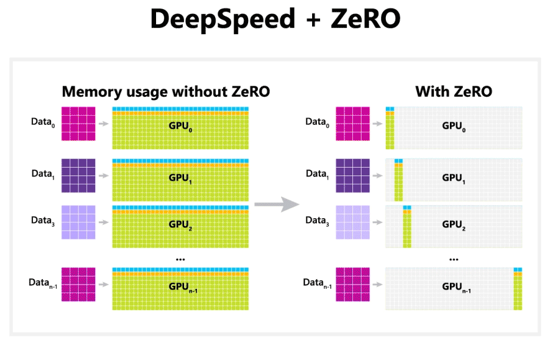
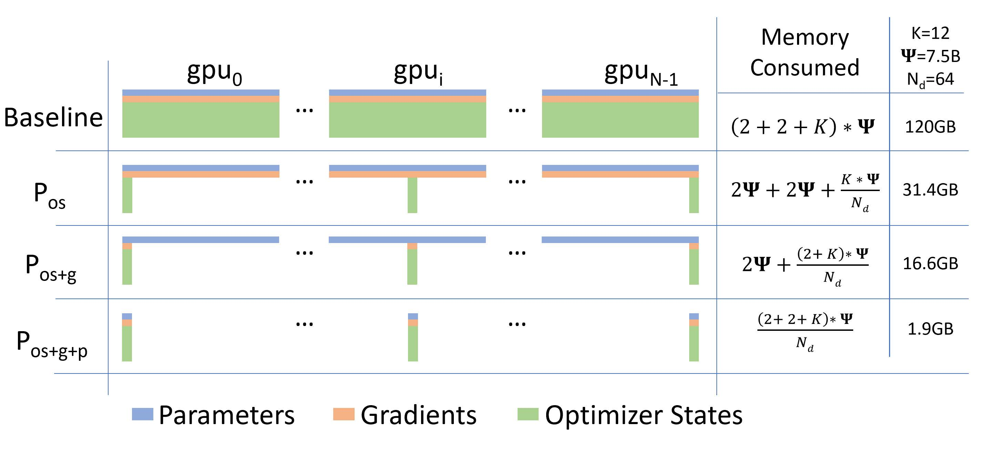
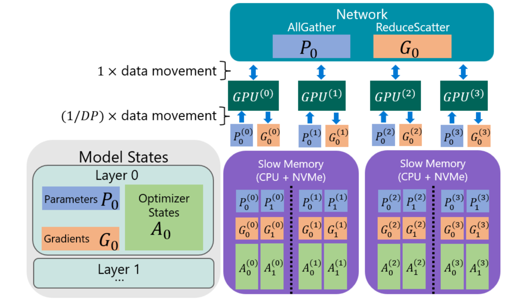
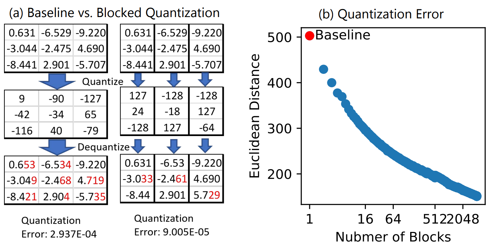

DeepSpeed ZeRO系列介绍#
Author by: Feiming Yang
在前一个章节中,我们对DeepSpeed进行了基本的介绍.DeepSpeed当前已经成为大模型训练的主流框架之一.而DeepSpeed之所以能够成为大模型训练的主流框架，尤其是在训练吞吐方面表现卓越，主要归功于其一系列突破性的技术创新，这些技术极大地优化了计算效率、通信效率和显存利用率。而这在一系列的优化技术之中,零冗余优化器(Zero Redundancy Optimizer，ZeRO)无疑是其最为核心的优化.接下来,本章将重点介绍DeepSpeed中的Zero系列优化,从大模型训练的显存困境,到ZeRO各个系列如何逐步突破显存困境,最终实现低显存占用,高训练吞吐的大模型训练,进行详细的介绍和分析.
1.大模型训练的显存困境#
随着大模型训练的Scaling Law不断被验证,模型训练的规模也越来越大.如今,超大模型已经成为推动AI领域研究和应用的核心引擎.然而,当我们训练一个形如GPT-3(175B参数)规模的大模型时,一个最为棘手的问题便会浮现——显存墙（Memory Wall）。
对于一个拥有175B参数的大模型,使用标准的混合精度训练(BF16参数和梯度，FP32优化器状态),其显存需求如下:
模型参数 (BF16): 175B × 2 bytes = 350 GB
梯度 (BF16): 175B × 2 bytes = 350 GB
优化器状态 (Adam, FP32): 175B × (4 bytes for master params + 4 bytes for momentum + 4 bytes for variance) = 2100 GB
上述显存需求总计2800 GB。. 这个数字，远超地球上任何单张GPU的容量。而使用传统的数据并行（Data Parallelism, DP）,也只能将训练数据分布在数百甚至数千张上，但是每张卡都需要维护一份完整的优化器状态和参数副本，所以单张卡的需求带来的显存瓶颈依然存在。
面对这个问题,微软的DeepSpeed团队提出了零冗余优化器(Zero Redundancy Optimizer，ZeRO),带来了一系列的显存优化,使得在分布式集群中高效训练超大规模模型成为可能.Zero系列的优化,并非在传统的数据并行的基础上进行简单的修补,而是从根本上剖析并且重构了大规模集群下分布式训练的显存管理,并且经过一系列精妙的设计,实现了显存需求和训练效率之间的完美配合.

ZeRO系列起源于微软DeepSpeed团队发表的一篇论文《ZeRO: Memory Optimizations Toward Training Trillion Parameter Models》.在论文中,研究人员指出,大模型训练过程中,GPU显存主要被以下几部分所占用:
模型状态 (Model States):
参数 (Parameters, P): 模型权重，设参数量为 \(\Phi\)。其显存占用为 \(\Phi\) ×
sizeof(dtype_P)。梯度 (Gradients, G): 反向传播计算出的参数梯度。显存占用为 \(\Phi\) ×
sizeof(dtype_G)。优化器状态 (Optimizer States, O): 优化器为每个参数维护的动量、方差以及master参数等。以Adam为例，显存占用为 \(3\) × \(\Phi\) ×
sizeof(dtype_O)。
残余状态 (Residual States):
激活值 (Activations, A): 前向传播的中间结果，用于反向传播。其大小与批次大小、序列长度和模型深度强相关。ZeRO主要不针对此项，但是可以和Activation Checkpointing技术高效结合,使得激活值占用的显存大幅降低
其他: 如临时缓冲区和显存碎片。
传统的深度学习主要采用DP并行的方式进行多设备训练.在标准的PyTorch DistributedDataParallel (DDP)中，每个GPU都持有模型状态的完整副本。
单GPU显存公式: 假设混合精度训练（参数和梯度为BF16，优化器状态为FP32），单GPU所需显存为： $\( M_{DP} = (\Phi \times 2) + (\Phi \times 2) + (\Phi \times 12) = 16\Phi \text{bytes} \)$
通信分析: 在反向传播后，所有GPU需要同步梯度。这通过一次 All-Reduce 操作完成。对于拥有
N个GPU的系统，其通信量近似为： $\( C_{DP} = 2 \times \frac{N-1}{N} \times (\Phi \times 2) \approx 4\Phi \text{bytes} \)$ （注：sizeof(BF16)为2，系数2表示数据发送和接收）。
在DP的简洁性背后是巨大的显存冗余，这正是ZeRO要解决的核心问题。
2.Zero-DP和Zero-R#
正如我们前文提到,ZeRO系列主要致力于处理大模型训练中的冗余显存,针对模型状态和残余状态中的显存碎片,ZeRO分别提出了ZeRO-DP和ZeRO-R.
ZeRO-DP基本原理#
ZeRO-DP 对模型状态进行切分，具体来说，每个设备都只会会存储 \(\frac{1}{N_d}\) 的模型状态（其中 \(N_d\) 为并行度），在需要时通过集合通信 All-gather 获取参数。ZeRO-DP 保留了数据并行训练（DP）的高效率，同时实现了模型并行（MP）的显存效率优势。由于数据并行的模型状态在所有数据并行进程中冗余存储，因此显存效率低下，但数据并行具有更高的计算粒度和更低的通信量，从而具有更高的训练效率。模型并行的通信开销很大，因此可扩展性比数据并行低，但 MP 对模型状态进行分区，获得了较高的显存效率。ZeRO-DP 对模型状态进行分区而不是复制它们，并使用动态通信调度最小化通信量。通过这样做，ZeRO-DP 随着数据并行程度的增加线性减少模型在每块设备的显存占用，同时保持通信量接近默认数据并行的通信量，从而保持效率。

ZeRO-DP 有三个主要优化阶段，分别对应于优化器状态、梯度和参数的划分，在累积启用时：
优化状态分区（Partition optimizer states，\(P_{os}\)）：又称为 ZeRO-1，将优化器状态按并行度均匀分区，每个进程只需存储 \(\frac{1}{N_d}\) 的优化器状态（其中 \(N_d\) 为并行度）。这可将显存消耗减少到 1 / 4，且无额外通信开销。
添加梯度分区（Partition gradients，\(P_{os+g}\)）：又称为 ZeRO-2，在优化器状态分区的基础上，对梯度也进行分区。每个进程只需存储用于更新自身参数分区所需的梯度。这可减少 8 倍的显存消耗，且无额外通信开销。
添加参数分区（Partition parameters，\(P_{os+g+p}\)）：又称为 ZeRO-3，在优化器状态和梯度分区的基础上，对参数也进行分区。每个进程只存储自身的参数分区，在前向反向传播时需要从其他进程收集所需的参数分区。这会使通信量增加约 50%，但可以实现与并行度 \(N_d\) 成正比的显存减少。
通过这三个阶段的优化，ZeRO-DP 最终能够在保持数据并行高效的同时，将每个设备的显存消耗降低至 \(\frac{1}{N_d}\) 的水平，使得利用少量硬件资源训练万亿参数等超大模型成为可能。
ZeRO-DP通信分析#
Zero-DP通过将训练过程中的冗余显存分散到不同的计算device上,来实现显存消耗的大幅减少,这种优化带来的代价就是通信的变化.事实上,和传统的数据并行相比, Zero-DP的三个阶段中,\(P_{os}\)和\(P_{os+g}\)的通信效率基本一致,而\(P_{os+g+p}\)则增加了一半的总通信量
最先进的 All-reduce 实现采用两步法，第一步是 Reduce-scatte 操作，一个是 All-gather 操作，每个流程的总数据移动量为 \(\Psi\) 个元素（对于 \(\Psi\) 个元素的数据）。因此，标准 DP 在每个训练步骤中会产生 2 \(\Psi\) 次数据移动。
通过梯度分区（\(P_{os+g}\)），每个进程只存储更新相应参数分区所需的梯度部分。因此，ZeRO 只需要对梯度先进行 Reduce-scatte 操作，产生的通信量为 \(\Psi\)。在每个进程更新完自己负责的参数分区后，会执行一次 All-gather，从所有数据并行进程中收集所有更新的参数。这也会产生 \(\Psi\) 的通信量。因此，每个训练步骤的总通信量为 \(\Psi\) + \(\Psi\) = 2 \(\Psi\)，与标准 DP 相同。
在参数分区（\(P_{os+g+p}\)）后，每个数据并行进程只存储其更新的参数。因此，在前向传播过程中，它需要接收所有其他分区的参数。不过，这可以通过流水线操作来避免内存开销——在对模型中与特定分区对应的部分进行前向传播计算之前，负责该分区的数据并行进程可以向所有数据并行进程广播权重。一旦该分区的前向传播计算完成，参数就可以被丢弃。因此，总通信量为 \(\Psi × N_d / N_d = \Psi\)。我们通过在整个前向传播中通过 All-gather 传播参数已重新获取参数，并在使用完参数后将其丢弃。而在后向传播时，需要以相反的顺序再次进行参数获取。参数的通信为 2 \(\Psi\)，在参数更新时只需要执行一个 Reduce-scatte 操作，通信量为 \(\Psi\)，因此总通信量是 3 \(\Psi\)，是标准 DP 的 1.5 倍。
ZeRO-R基本原理#
除了优化模型状态（优化器状态、梯度和参数）的显存利用率，ZeRO 还专门针对剩余状态（如激活数据、临时缓冲区和显存碎片等）进行了优化，以进一步减少显存开销。ZeRO-R 对剩余状态进行了切分和优化，主要包括以下几个策略:
分区激活检查点（Partitioned Activation Checkpointing，\(P_{a}\)）：解决了模型并行时激活显存冗余的问题。在模型并行中，每个设备需要保存完整的输入激活数据才能计算自己分到的模型部分。ZeRO-R 将激活检查点按模型并行度 \(N_m\) 进行分区，每个设备只需存储 \(\frac{1}{N_m}\) 的激活检查点。在需要时通过 All-gather 操作重构出完整激活数据，从而按 \(N_m\) 的比例减少激活显存。在极端情况下，当模型规模很大时，ZeRO-R 甚至可以将分区后的激活检查点卸载到 CPU 显存（\(P_{a+cpu}\)），再次降低设备显存占用，代价是额外的主机-设备通信开销。该策略在大模型训练时会自动开启，以保证足够的设备显存用于计算。
恒定大小的缓冲区（Constant Size Buffer，\(C_{b}\)）：一些操作如 All-reduce 需要将张量拼成连续的临时缓冲区，使用恒定大小的缓冲区来避免临时缓冲区随着模型大小的增加而爆炸，同时使它们足够大以保持效率。
显存碎片化整理（Memory Defragmentation，\(M_{d}\)）：在训练过程中，由于激活检查点、梯度等张量生命周期的差异，会产生大量显存碎片。ZeRO-R 通过预分配和动态管理这些张量的显存，减少了显存碎片和显存分配器的开销，提高了显存利用率。
通过以上优化策略，ZeRO-R 很好地补充和完善了 ZeRO-DP 优化模型状态显存的功能。两者相结合，ZeRO 优化器能最大限度减少大模型训练的显存占用，为未来万亿参数级别的神经网络模型铺平了道路。
ZeRO-R通信分析#
ZeRO-R 的通信开销取决于模型大小、检查点策略和模型并行（MP）策略。与标准模型并行相比（其中没有对激活进行分区），ZeRO-R \(P_{a}\) 的通信开销通常不到标准模型并行的十分之一。
在使用激活检查点的 Megatron-LM 中，每个 Transformer 块在前向传播中执行两次大小为 \(batch × seq × length × hidden\_dim\) 的 All-reduce 操作，然后在反向传播中再执行两次。在使用激活检查点的 ZeRO-R 中，每个前向重计算激活之前需要执行一个额外的 All-gather 操作。通常情况下，对于每个 Transformer 块的输入激活进行检查点，因此每个 Transformer 块需要一个 All-gather 操作。因此，ZeRO-R \(P_{a}\) 的通信开销为 \(seq\_length × hidden\_dim\)，仅增加不到 10%。
当 MP 与 DP 一起使用时，ZeRO-R \(P_{a}\) 可以将数据并行通信量减少一个数量级，而模型并行通信量只增加 10%，并且当数据并行通信是性能瓶颈时，可以显着提高效率。通过模型并行可以减少数据并行的内存消耗，从而可以成比例地增加批处理大小。对于大模型，MP 可以增加到 16（DGX-2 节点上的 GPU 数量），从而可以将批处理大小增加多达 16 倍。数据并行训练的通信量与批处理大小成反比，由于 \(P_{a}\) 导致批处理大小增加一个数量级，可能会导致数据并行通信量减少一个数量级。
如果应用 \(P_{a+cpu}\)，则分区激活检查点会被卸载到 CPU，将激活内存需求减少到接近零，但与 \(P_{a}\) 相比，往返 CPU 内存的数据移动增加了 2 倍。如果 DP 通信量是主要瓶颈，由于批处理大小较小，\(P_{a+cpu}\) 也可以通过增加批处理大小来提高效率，只要 CPU 数据传输开销小于 DP 通信量开销。
3.ZeRO在DeepSpeed中的实现#
接下来,我们通过Zero系列在DeepSpeed中的实现来进一步剖析DeepSpeed是如何将ZeRO的三个阶段落地,进而实现高效的通信和训练.
初始化与封装：deepspeed.initialize#
Deepspeed的优化逻辑一切始于 deepspeed.initialize。这个函数是用户与DeepSpeed交互的入口。
model, optimizer, _, _ = deepspeed.initialize(
args=args,
model=model,
model_parameters=model.parameters(),
config=deepspeed_config
)
根据配置文件中 zero_optimization 的 stage 参数（1, 2, 或 3），initialize 函数会创建并返回一个 DeepSpeedEngine 实例。这个引擎封装了模型、优化器，并接管了训练循环的核心逻辑（train_batch, backward, step）。
Stage 1 & 2 的实现核心：DeepSpeedZeroOptimizer#
对于Stage 1和2，核心逻辑封装在 deepspeed.runtime.zero.stage1_and_2.DeepSpeedZeroOptimizer 类中。它封装了用户定义的优化器（如Adam）(deepspeed/runtime/zero/stage_1_and_2.py)。
参数分区: 在初始化时，它会根据当前GPU的rank，确定自己负责哪一部分参数，并仅为这部分参数创建和维护优化器状态。
# loop to deal with groups for i, param_group in enumerate(self.optimizer.param_groups): ... # divide the flat weights into near equal partition equal to the data parallel degree # each process will compute on a different part of the partition # self.bit16_groups_flat: 展平的bf16参数,用于减少内存碎片 data_parallel_partitions = self.get_data_parallel_partitions(self.bit16_groups_flat[i], i) self.parallel_partitioned_bit16_groups.append(data_parallel_partitions) ... # A partition of the fp32 master weights that will be updated by this process. # Note that the params in single_partition_of_fp32_groups is cloned and detached # from the origin params of the model. if not fp16_master_weights_and_gradients: weights_partition = self.parallel_partitioned_bit16_groups[i][partition_id].to( self.device).clone().float().detach() else: weights_partition = self.parallel_partitioned_bit16_groups[i][partition_id].to( self.device).clone().half().detach() self.single_partition_of_fp32_groups.append(weights_partition) # Set local optimizer to have flat params of its own partition. # After this, the local optimizer will only contain its own partition of params. # In that case, the local optimizer only saves the states(momentum, variance, etc.) related to its partition's params(zero stage1). self.single_partition_of_fp32_groups[ i].requires_grad = True # keep this in case internal optimizer uses it param_group['params'] = [self.single_partition_of_fp32_groups[i]] ...
梯度Reduce-Scatter (Stage 2): 当用户调用
model.backward(loss)后，DeepSpeedEngine会拦截梯度。对于Stage 2，它会调用一个类似reduce_scatter_gradients的方法，该方法内部使用torch.distributed.reduce_scatter_tensor将梯度分区到对应的GPU上。参数同步: 当用户调用
model.step()时，DeepSpeedZeroOptimizer的step()方法被触发。它使用分区后的梯度和优化器状态，更新本地持有的那部分FP32参数。
更新后，它会调用一个内部函数（如
_update_model_params），该函数执行 All-Gather 操作，将所有分区更新后的参数收集起来，组成完整的模型参数，并更新到模型的所有BF16参数上。
Stage 3：参数动态管理#
Stage 3的实现则完全不同，它从模型构建之初就介入了。核心逻辑封装在 deepspeed.runtime.zero.stage3.DeepSpeedZeroOptimizer_Stage3 类中。(deepspeed/runtime/zero/stage3.py)。
低内存初始化: 用户需要使用
deepspeed.zero.Init()上下文管理器来实例化模型。with deepspeed.zero.Init(): model = MyLargeModel()
在这个上下文中，
torch.nn.Parameter的行为被修改。参数在创建时不会立即分配内存，而是被转换为deepspeed.runtime.zero.partition_parameters.PartitionedParameter。它只在自己所属的GPU上分配1/N的内存，在其他GPU上则是一个占位符。动态参数获取 (Hooks): Stage 3的核心在于PyTorch的 Hooks。
DeepSpeedEngine会为模型中的每个nn.Module注册pre-forward和pre-backward钩子。# Conceptual Pseudocode for Stage 3 Engine def _pre_forward_module_hook(module, *args): # Before entering a module's forward pass # 1. Identify all parameters needed by this module. # 2. Issue a non-blocking All-Gather to fetch these parameters. # 3. Wait for the communication to complete. # 4. Populate the module's parameters with the full tensors. module.gather_params() def _post_forward_module_hook(module, *args): # After exiting a module's forward pass # 1. Release the memory of parameters that are not part of this GPU's partition. module.release_params() # Similar hooks exist for the backward pass.
分桶 (Bucketing): 为了避免为每个微小的参数都发起一次All-Gather，DeepSpeed会将参数分组到更大的“桶”中。通信以桶为单位进行，这极大地提高了网络效率，将大量小通信合并为少量大通信。
4. ZeRO系列的进一步探索#
在已有的三阶段ZeRO-DP和ZeRO-R优化下,DeepSpeed进一步对显存和通信效率进行了优化.后续的工作主要是ZeRO-Infinity和ZeRO++.
ZeRO-Infinity#
ZeRO-Infinity是ZeRO的扩展功能，可以将深度学习训练扩展到前所未有的规模。具体来说它突破了 GPU 内存壁垒的限制，并使得能够训练具有数万亿个参数的模型成为可能，这是迄今为止最先进系统所无法企及的量级。此外，它为训练具有一千万亿个参数的模型铺平了道路——充分利用系统的全部内存容量，利用 GPU、CPU 和 Non-Volatile Memory Express（NVMe）等所有异构内存组件的能力。

在 ZeRO-Infinity 中，参数从较慢的内存源（如 CPU 和 NVMe）无缝迁移到 GPU，其中它们被合并为完整的层。梯度计算完成后，这些参数被聚合、重新分区，然后重新卸载回较慢的内存组件。其中内存资源的编排确保了最佳利用和最小的开销。这种创新的方法不仅克服了 GPU 内存的常规限制，而且提升了分布式框架的可扩展性。
我们可以使用峰值计算吞吐量（\(peak_{tp}\)）、数据移动带宽（\(bw\)） 及其算术强度（\(ait\)） 来估算ZeRO-Infinity的训练效率。
工作负载的算术强度（AIT） 是总计算量与计算所需数据量之间的比率。它描述了每次数据移动所需的计算量。AIT 越高，意味着对数据移动带宽的要求越低，因为每加载一个数据，加速器就能完成更多计算。
因此效率可以大致估算为：
我们同样以 Transformer 为例：每次迭代的总计算量可以由参数数量、序列长度和批量大小估算，即对于前向传播为 \(2 × bsz × seq × params\)，反向传播的成本大约是正向传播的两倍。因此我们可以估算计算量：
在前向和反向传播期间，模型参数必须从源位置加载到 GPU 寄存器至少两次（前向传播期间和实际后向传播期间），导致 2 次的数据移动。在存在激活检查点的情况下，可以在向后传递过程中额外加载一次参数以进行重新计算。此外，梯度必须至少从 GPU 寄存器存储到其最终位置一次。因此，假设参数和梯度存储在相同的最终位置，则前向和后向传递期间的总数据移动将为 \(4 × parameters\)，即 \(2 × 4 × parameters\)（以字节为单位）。因此参数和梯度的 ait 为：
在优化器迭代期间，必须至少读取一次优化器状态，并且必须至少写入一次优化器状态。因此，总数据移动量为 \(2 × optimizer_states\)，大约为 \(2 × 16 × parameters\) 字节。因此，在完整的训练迭代期间，优化器状态的 ait 为：
在前向传播期间，激活检查点必须保存到其最终位置，并且必须在后向传播期间获取。因此，激活检查点的总数据移动量（以字节为单位）为 \(2 × total\_activation\_checkpoints\_in\_b𝑦tes\)，带入我们之间计算的激活检查点大小，可以得到总数据移动量 \(4 × nl/ci × hd × seq × bsz\)。所以激活检查点的 ait 为：
模型状态和激活检查点对带宽的要求大不相同。前者只取决于批量大小和序列长度，而后者只取决于激活检查点的频率和模型的隐藏维度大小。在实际中，参数和梯度的带宽超过 70 GB/s，即使是最小的批处理量，也能实现超过 50% 的效率。在这种带宽下，数据移动理论上可以与计算完全重叠，从而实现 100% 的效率。与参数和梯度相比，优化器状态需要高出近 4 倍的带宽才能达到 50% 的效率。此外，优化器状态在前向和后向传播结束时更新，不能与计算重叠。因此，它们需要更大的带宽来保持整个 DL 工作负载的效率。例如，在每个 GPU 的批处理量为 2 的情况下，要达到 90% 的效率，需要近 1.5 TB/s 的有效带宽，甚至超过了 GPU 内存带宽。启用激活检查点后，即使隐藏大小为 2K，2 GB/s 的微薄带宽也能维持 50% 以上的效率。当隐藏大小超过 8K 时，带宽需求降至 1 GB/s 以下。
ZeRO++#
尽管DeepSpeed的ZeRO系列通过Zero-DP和Zero-R重构训练显存分配以及通过ZeRO-Infinity利用异构设备为大规模的模型训练提供了强大的解决方案,并且这些技术已经被广泛应用于大规模的模型训练中.但是,在某些关键的训练场景下,跨GPU的数据传输开销较大,从而使得高效训练成为更大的挑战.例如,当在很多GPU设备上训练一个较大的batch size时,每个GPU上的本地batch size则相对较小,需要进行频繁的通信.而在某些相对低端的GPU上训练时,跨节点的通信带宽往往受限,从而导致通信延迟相对较高.在这些场景下,ZeRO的加速能力被通信限制,无法实现更高效的训练.
为了解决这个问题,DeepSpeed进而提出了ZeRO++.ZeRO++是一个基于ZeRO构建的通信优化的系统,旨在使大模型的高效训练不受批次大小和跨设备通信带宽的限制.ZeRO++主要主要利用量化,结合数据以及通信重映射的方式,相较于ZeRO,将训练过程中的总通信量减小四倍,且不影响模型质量. 尽管ZeRO++主要被设计用于训练,但是由于在ZeRO的训练和推理过程中,通信的开销是相似的,其也可以被使用在推理中.进而加速模型的推理过程.
回顾前文所述,假设模型总参数量的为\(\Phi\), 在前向过程中,ZeRO需要执行all-gather操作来收集每一层的参数.考虑重计算的情况下,在反向过程中,ZeRO则首先需要执行前向相似的操作来收集参数,然后通过reduce-scatter来对参数的梯度进行规约聚合.因此,ZeRO则有\(3\Phi\)的通信量,分别由两次all-gather和一次reduce-scatter组成.
为了减少这些通信开销,ZeRO++进行了三组通信优化,分别针对以上三个通信操作.
其一是权重量化通信(Quantized weight communication for ZeRO, qwZ). 为了减少all-gather期间的参数通信量,ZeRO++在通信前将每个模型参数从FP16(2字节)缩减为INT8(1字节),然后在通信结束后,将权重再反量化回来.然而,如果只是简单地对权重进行直接,可能会降低模型训练的精度.为了减少对训练精度的影响,ZeRO++采用一种基于block的量化策略,对于模型参数,以block为单位进行量化.在当时的背景下,还不存在基于block的高性能量化算子.因此DeepSpeed团队从零实现了高度优化的量化kernel,与当时的基础实现相比,其精度提高了三倍,性能提升了五倍.
下图展示了Zero++中使用的基于block的量化和传统量化方式的区别以及随着block的数目增大,量化误差的变化趋势.

其二是分层权重划分(Hierarchical weight partition for ZeRO, hpZ).为了减少反向传播中的参数all-gather带来的通信损耗,ZeRO++使用GPU显存来换取通信开销.具体而言,在反向过程中,ZeRO++不再像ZeRO一样,把参数切分到所有参加训练的GPU设备上,而是在每个节点内保留一份完整的模型参数.尽管这种情况下,GPU设备的显存占用更高,但是all-gather通信从低带宽-高延迟的跨节点通信的方式变成了高带宽-低延迟的节点内通信.
其三是梯度量化通信(Quantized gradient communication for ZeRO, qgZ). 在反向梯度的reduce-scatter过程中,降低通信量的挑战更大.因为这里涉及到不同device之间的梯度规约,直接使用量化来减少通信量是不可行的.即使采用类似权重量化的方式也会对于模型训练精度有较大的影响.为了缓解这个问题,需要在通信操作之前量化梯度,但是在规约操作之前,就将梯度反量化回去.为了高效实现这一设计目标,ZeRO++发明了一种全新的基于all-to-all的梯度量化范式,即qgZ.
传统的reduce-scatter的通信操作主要基于树或者环结构,为了实现全精度的规约操作,传统做法需要执行多次量化和反量化操作.而qgZ则主要通过分层all-to-all的方式来克服这一挑战.qgZ的实现过程主要有三个关键步骤:
1.重排反向过程中产生的参数梯度
2.进行节点内的梯度通信和规约操作
3.进行节点间的梯度通信和规约操作
首先,在进行梯度的reduce-scatter之前,将梯度切块,并且将这些分块重新排序来保证最终的梯度排列正确.然后,对这些重拍后的梯度分块进行量化,并且在每个节点之间执行all-to-all通信,然后将通信完的梯度进行反量化,再局部执行规约操作.接着,再将规约后的节点内部的梯度进行节点间的all-to-all通信,并且再次反量化接受到的梯度,进行最终的梯度规约.ZeRO++还进一步通过节点内通信和节点间通信的重叠,以及高性能的融合算子kernel来减少整体延迟.
qgZ的具体过程可以参考下图.

其中,灰色块代表反向过程中产生的参数梯度,绿色块代表最终每个gpu设备上规约后的梯度.橙色线圈出的部分代表qgZ过程中的高性能融合算子,在执行过程中不同的grad分块之间可以交叠执行.
Zero++采用以上三种优化后,进一步减少了通信延迟,提高了训练效率.在小batch size的场景下,相对于ZeRO-3, ZeRO++在不同的模型大小下可以实现28%到36%的训练吞吐提升.而在形如100Gbps的低配置的网络环境下,ZeRO++相较于ZeRO-3可以实现接近两倍的性能加速比.
总结与思考#
本节对DeepSpeed中的ZeRO系列优化进行了详细的分析和讨论.ZeRO针对传统分布式并行的显存问题,进行了一系列变革的显存和通信优化,最终实现了高效的训练吞吐.尽管随着GPU硬件设备的更新换代,单卡显存容量不断提升,机内和机间的通信带宽也不断增大,形如Megatron-LM等5D并行训练逐渐取代DeepSpeed ZeRO系列的数据并行优化,成为现在大模型训练的主流.但是ZeRO系列的优化思想已经深入贯穿到目前的大模型训练中.例如ZeRO-1,即Megatron-LM中的Distributed_Optimizer已经成为标准组件.而基于block的量化也已经被广泛应用于各种量化加速中.
参考与引用#
https://arxiv.org/pdf/1910.02054
https://docs.oneflow.org/master/cookies/zero.html
https://www.deepspeed.ai/tutorials/zero-offload/
https://www.microsoft.com/en-us/research/blog/zero-infinity-and-deepspeed-unlocking-unprecedented-model-scale-for-deep-learning-training/
https://www.microsoft.com/en-us/research/blog/deepspeed-zero-a-leap-in-speed-for-llm-and-chat-model-training-with-4x-less-communication/
https://www.microsoft.com/en-us/research/publication/zero-extremely-efficient-collective-communication-for-giant-model-training/
https://arxiv.org/pdf/2306.10209